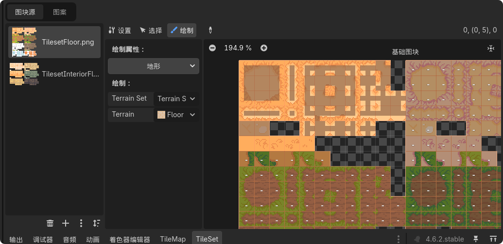
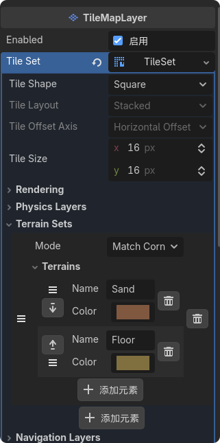
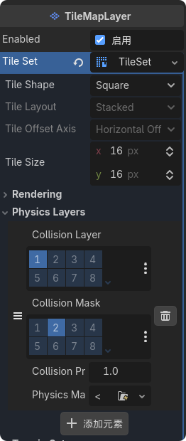
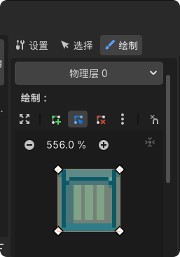
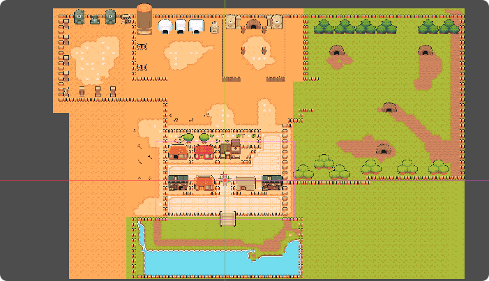

从零开始学习 Godot 4 开发 2D RPG 游戏
先新建一个场景，然后创建一个 Node2D 节点，在节点下面创建 TileMapLayer 节点，添加上瓦片集，进行快捷使用。
在 Godot 编辑器中创建一个新场景。
在场景中创建一个 Node2D 节点作为根节点。
在 Node2D 节点下创建 TileMapLayer 节点。
为 TileMapLayer 添加瓦片集资源，这样就可以在编辑器中绘制地图了。


然后给添加的素材添加物理碰撞，这样角色就可以在地图上行走但不能穿过墙体。
在 TileMap 编辑器中选择需要添加物理碰撞的瓦片。
在瓦片编辑器中找到并打开物理(Physics)选项。
使用矩形或多边形工具为瓦片绘制碰撞形状。


然后根据其他的图片集进行完善地图内容，添加更多的地形、建筑物、装饰物等元素。
